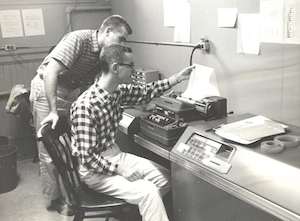

This website was created by Stephen Garland, a retired computer scientist with a long-standing interest in education and computing. He hopes—through this website—to enable young students to experience his excitement as a participant in the on-going development of computer applications and services.
Brief Biography
 Dr. Garland was fortunate to be in interesting places at exciting times in the history of computing. He arrived at Dartmouth College as an undergraduate just months after an LGP-30, a small vacuum-tube computer with 4 KB of drum memory. Since the LGP-30 was so small, it was essentially a personal computer—exceedingly primitive by today’s standards, but still one that students could touch, completely control, and make do interesting things. The first program Dr. Garland remembers writing played tic-tac-toe; the second was a compiler for ALGOL-60, an early high-level programming language.
The successful use of the ALGOL compiler in mathematics courses at Dartmouth inspired Professors John Kemeny and Thomas Kurtz to make computing even more widely accessible and available throughout the undergraduate curriculum. To do this, they created the BASIC programming language and the Dartmouth Timesharing System. These developments were in the forefront of a revolution in computer use in the late 1960s and early 1970s—a revolution that culminated in the rise of personal computers.
After earning a PhD in mathematical logic at Berkeley in 1967, Dr. Garland returned to Dartmouth to teach and to oversee software development for the timesharing system. The next 15 years saw the nation-wide emergence of computer science as an academic discipline. At Dartmouth, Dr. Garland led the development of an undergraduate major in computer science, and he started the Program in Computer and Information Science, a master’s program on the management of computing and computers in management. He also chaired the College Board committee that created the Advanced Placement Program in Computer Science, and served as vice-chairman of the ANSI/X3J2 Basic Standards Committee.
In 1985, Dr. Garland moved to another center of excitement for computing—the MIT Laboratory for Computer Science, which later became CSAIL, the Computer Science and Artificial Intelligence Laboratory. As a Principal Research Scientist, he co-led research projects on the Larch specification methodology, LP (an interactive proof assistant), IOA (a language and set of tools for the design and analysis of reliable distributed systems), and active networking.
At MIT, Dr. Garland witnessed the explosive growth of the World Wide Web and the ever increasing power of ever smaller computing devices. There he played an active role in MIT’s Project Oxygen, which foresaw the imminent popularity of smart phones in its promotion of pervasive human-centered and location-aware computing.
In retirement, Dr. Garland offers pro-bono Philadephia-based workshops in computing and mathematics through PCLIC (Promoting Computer Literacy in Children).